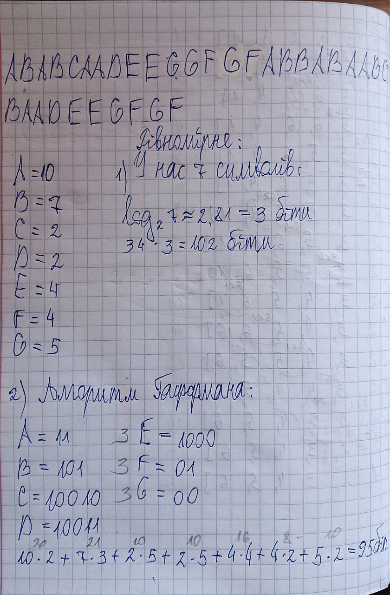

b -> 00
f -> 010
c -> 0110
d -> 0111
e -> 100
g -> 101
a -> 11
2. Виконання завдання з наданим прикладом
2.1. Розв’язання завдання за алгоритмом Гафмена вручну

розв’язання_вручну
розв’язання_вручну
2.2. Перевірка результату за допомогою коду.
# A Вузол дерева Гафменаimport heapqfrom collections import defaultdict# для відображення кожного символу на його значення Гафменаcodes = {}# Для зберігання частоти символів вхідних данихfreq = defaultdict(int)# Вузол дерева Гафменаclass MinHeapNode:def__init__(self, data, freq):self.left =Noneself.right =Noneself.data = dataself.freq = freqdef__lt__(self, other):# Порівняння вузлів на основі їх частотиreturnself.freq < other.freq# допоміжна функція для виведення символів разом з# їх значеннями Гафменаdef printCodes(root, str_val):if root isNone:returnif root.data !='$': # '$' використовується для внутрішніх вузлівprint(root.data, ":", str_val) printCodes(root.left, str_val +"0") printCodes(root.right, str_val +"1")# допоміжна функція для зберігання символів разом з# їх значеннями Гафмена в хеш-таблиціdef storeCodes(root, str_val):if root isNone:returnif root.data !='$': codes[root.data] = str_val storeCodes(root.left, str_val +"0") storeCodes(root.right, str_val +"1")# функція для побудови дерева Гафмена та зберігання його# в minHeapdef HuffmanCodes():global minHeap# Додаємо всі вузли символів до minHeapfor key in freq: heapq.heappush(minHeap, MinHeapNode(key, freq[key]))# Будуємо дерево Гафменаwhilelen(minHeap) !=1:# Витягуємо два вузли з найменшою частотою left = heapq.heappop(minHeap) right = heapq.heappop(minHeap)# Створюємо новий внутрішній вузол top = MinHeapNode('$', left.freq + right.freq) top.left = left top.right = right heapq.heappush(minHeap, top)# Зберігаємо коди Гафмена після побудови дерева storeCodes(minHeap[0], "")# допоміжна функція для відображення кожного символу на його# частоту у вхідному рядкуdef calcFreq(input_str):for char in input_str: freq[char] +=1# функція перебирає закодований рядок s# якщо s[i]=='1', то переходить до node->right# якщо s[i]=='0', то переходить до node->left# якщо це листовий вузол, додає node->data до нашого вихідного рядкаdef decode_file(root, s): ans ="" curr = root n =len(s)for i inrange(n):if s[i] =='0': curr = curr.leftelse: curr = curr.right# досягнуто листового вузлаif curr.left isNoneand curr.right isNone: ans += curr.data curr = root # Повертаємося до кореня для наступного символуreturn ans# Головний кодif__name__=="__main__": minHeap = []# Вхідний рядок для обробки input_str ="ABABCAADEEGGFGFABBABAABCBAADEEGFGF"# Використовуємо рядок з попереднього запиту# Обчислюємо частоту символів calcFreq(input_str)# Будуємо коди Гафмена HuffmanCodes()print("Частоти символів:")for char, frequency insorted(freq.items()):print(f"'{char}': {frequency}")print("\nКоди Гафмена:")for key insorted(codes):print(key, ":", codes[key])# Кодуємо вхідний рядок encodedString =""for char in input_str: encodedString += codes[char]print("\nЗакодовані дані Гафмена:")print(encodedString)# Декодуємо закодований рядок decodedString = decode_file(minHeap[0], encodedString)print("\nДекодовані дані Гафмена:")print(decodedString)# Перевірка, чи збігається декодований рядок з оригіналомprint(f"\nДекодований рядок збігається з оригіналом: {decodedString == input_str}")
Частоти символів:
'A': 10
'B': 7
'C': 2
'D': 2
'E': 4
'F': 4
'G': 5
Коди Гафмена:
A : 11
B : 00
C : 0110
D : 0111
E : 100
F : 010
G : 101
Закодовані дані Гафмена:
11001100011011110111100100101101010101010110000110011110001100011110111100100101010101010
Декодовані дані Гафмена:
ABABCAADEEGGFGFABBABAABCBAADEEGFGF
Декодований рядок збігається з оригіналом: True
Як можна побачити, вручну розв’язання не дійшло до глобального оптимуму. Є краще рішення. Спробуємо його знайти.
краще_розв’язання
3. Контрольні питання
1. Що таке жадібні алгоритми?
Жадібні алгоритми — це методи розв’язання задач, у яких на кожному кроці вибирається локально оптимальне рішення (тобто найкраще на даний момент) з надією, що така стратегія приведе до глобального оптимуму.
2. Що таке префіксний код? Який код використовується у коді Гафмена?
Префіксний код — це такий код, у якому жодне закодоване значення не є префіксом іншого. Це дозволяє однозначно декодувати будь-яку послідовність без роздільників.
Код Гафмена — це префіксний двійковий код, який базується на частоті символів: символи з більшою частотою мають коротші коди, а з меншою — довші.
3. Як пов’язана структура даних «купа» зі структурою даних «черга з пріоритетами»?
Купа (heap) — це структура даних на основі бінарного дерева, в якій батьківський елемент має більший або менший пріоритет, ніж його нащадки. Черга з пріоритетами — це абстракція, яка дозволяє швидко витягати елемент із найвищим (або найнижчим) пріоритетом. Зв’язок: Купа є ефективною реалізацією черги з пріоритетами.
Наприклад, мін-купа дозволяє за O(logn) додавати елементи і за O(logn) витягати найменший.
4. Що таке стиснення даних і для чого воно використовується? Які його основні переваги?
Стиснення даних — це процес перетворення даних у форму, що займає менше пам’яті або обсягу для зберігання чи передавання. Основні переваги:
Зменшення обсягу пам’яті.
Прискорення передачі даних по мережі.
Зменшення вартості зберігання або обслуговування.
Підвищення ефективності архівування та резервного копіювання.
5. Які кроки необхідно виконати для стиснення даних за допомогою алгоритму кодування Гафмена?
Обчислити частоти всіх символів у тексті.
Створити вузли для кожного символу з вагою (частотою).
Помістити вузли в мін-купу (чергу з пріоритетами).
Побудувати дерево Гафмена, об’єднуючи найменші вузли.
Присвоїти коди кожному символу, проходячи по дереву (0 — вліво, 1 — вправо).
Закодувати текст, замінюючи символи на їхні коди.
(Опціонально) Зберегти дерево або таблицю кодів для декодування.
6. Які основні обмеження та недоліки алгоритму кодування Гафмена? Чи можливо покращити його продуктивність?
Обмеження:
Ефективність зменшується, якщо частоти символів мало відрізняються.
Не підходить для потокових даних без попереднього аналізу частот.
Не оптимальний для невеликих повідомлень. Можливі покращення:
Використання адаптивного Гафмена (оновлює дерево на ходу).
Комбінування з іншими методами.
7. Які існують альтернативні методи стиснення даних, що можуть конкурувати з алгоритмом Гафмена?
Альтернативи:
Арифметичне кодування — часто ефективніше за Гафмена.
LZ77 / LZ78 / LZW — використовуються в ZIP, GIF.
RLE (Run-Length Encoding) — ефективне для повторюваних символів.
DEFLATE (комбінація LZ77 + Huffman) — основа ZIP, PNG.
8. Які практичні застосування можуть мати алгоритми стиснення даних, зокрема алгоритм Гафмена, у сучасних інформаційних системах?
Застосування:
Формати файлів: ZIP, PNG, MP3 (як частина алгоритму).